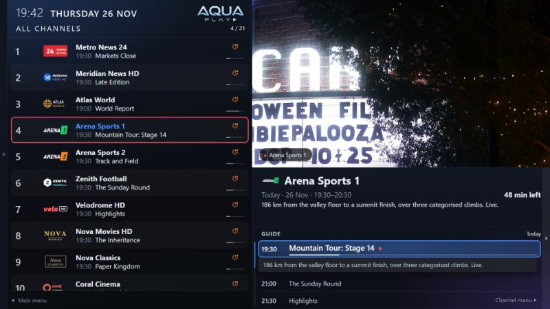
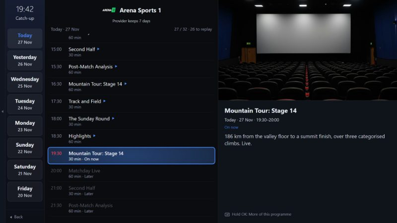
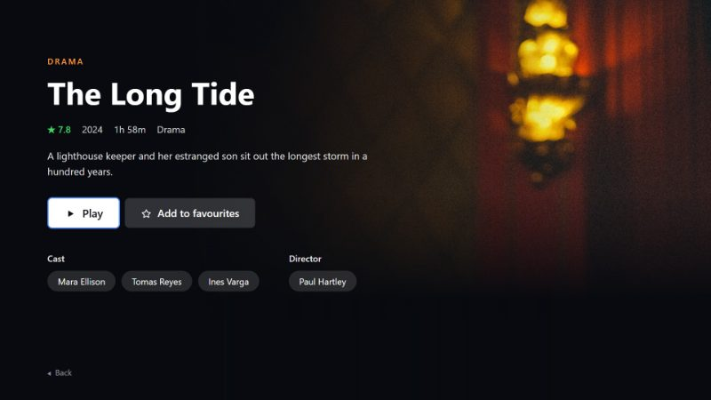
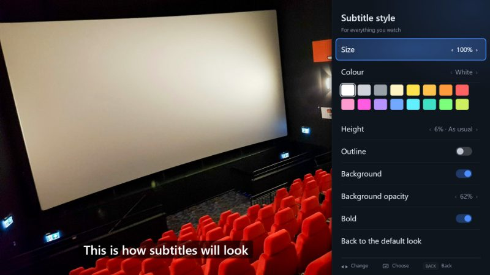

The only IPTV player you need.
Lightweight, fast, stable, responsive and maintained. AquaPlay plays your own M3U, Xtream Codes or Stalker/MAG playlist on Samsung and Android TVs, with a full guide, up to 14 days of catch-up and subtitles in 17 languages.
Samsung installs once from a computer: how. On Fire TV, open Downloader and type 1167505.
Plays the playlist you already have, on the TV you already own
- M3U
- Xtream Codes
- Stalker/MAG
- Samsung Tizen
- Android TV
- Google TV
Up and running in three steps.
No account to make. Your playlist goes from your phone to your TV, and nowhere else.
- 01
Install AquaPlay
Apps2Samsung puts it on a Samsung TV from your computer. On Android TV and Google TV, it is on Google Play.
- 02
Add your playlist
Type the code on the TV into your phone: an M3U link or file, an Xtream Codes login or a Stalker/MAG portal.
- 03
Watch
The guide, catch-up, films and subtitles are all there, with the arrows and OK.
Everything a night of TV needs.
Live channels, the shows you missed, films and series, in your language. All of it with the arrows and OK on the remote you already hold.

Live TV and the full guide
A grid guide beside the picture, search and reminders, favourites, and your own channel order and numbers.

Catch-up and rewind
Replay shows from up to 14 days back, start over a show that is on now, and rewind live TV, where your provider keeps it.

Films and series
Story, cast and a row of episodes on a page of their own. Simkl marks what you finish; TheIntroDB skips the intro.

Subtitles in your language
17 languages, Hebrew and Arabic right to left. Live channels and films switch subtitles on in yours by themselves.
Built to stay light
Runs on Samsung TVs from 2017 (Tizen 3.0 and later), keeps up with the remote even on very big guides, and every update comes with its own What's new, in your language.
Lightweight · fast · stable · kept up to date
Common questions.
What people ask before they install.
Does AquaPlay come with channels?
No. AquaPlay is a player only. It plays the playlist you bring from your own provider: an M3U link or file, an Xtream Codes login, or a Stalker/MAG portal.
Where do I get a playlist?
AquaPlay doesn't provide one. Use the M3U link, Xtream Codes login or Stalker/MAG portal from your own provider, or your own files.
What's an M3U, Xtream or Stalker playlist?
Three ways providers hand out channels. M3U is a link or a file that lists every channel. Xtream Codes is a server address with a user name and password. Stalker/MAG is a portal address that knows your TV by its MAC address. AquaPlay plays all three.
Does it work with my provider?
If your provider gives you an M3U link, an Xtream Codes login or a Stalker/MAG portal, yes.
Do I need an account to use AquaPlay?
No. Your playlist goes from your phone to your TV, and nowhere else.
Can I use AquaPlay for free?
Yes. On Samsung TVs every feature is free. On Android TV, Google TV and the APK, watching with one playlist is free, with the full guide, catch-up from the last day, films and series, and subtitles. Premium adds more playlists, recording, multi-view, profiles and more.
What does Premium cost, and is it a subscription?
$25 once, for good, for the AquaPlay APK. It isn't a subscription: nothing renews.
Which Premium do I get on my TV?
It depends on where AquaPlay came from. On a Samsung TV, every feature is free, so there is nothing to buy. Installed from Google Play, you buy Premium inside the app, through Google Play. Installed as the APK from this website (Fire TV and other boxes), you buy it here: $25 once.
Which TVs does it run on?
Samsung TVs from 2017 (Tizen 3.0 or later), Android TV and Google TV sets and boxes, and Fire TV and other boxes with the APK.
Is it safe to install on my Samsung TV?
Yes. Apps2Samsung installs AquaPlay like any developer's app. Apart from Developer mode, nothing on the TV changes, and you can delete AquaPlay at any time like any other app.
Do I need a remote with number keys?
No. AquaPlay is built for remotes with and without number keys: everything works with the arrows and OK.
Is my playlist safe?
Yes. You add it from your phone, and it is encrypted on the phone before anything leaves it. Only your TV can read it.
Does AquaPlay collect my data?
No. Your playlists and what you watch stay on your TV: we don't log, track or upload them. The details are in the Privacy policy.
Is AquaPlay legal?
Yes. AquaPlay is a media player only. It doesn't provide, host or sell channels, films or playlists; you play your own, legally acquired content.
Which languages does it speak?
17 languages, for everything on screen. Hebrew and Arabic read right to left, and subtitles can switch on in your language by themselves.
- English
- Spanish
- French
- German
- Portuguese (Brazil)
- Italian
- Polish
- Russian
- Hindi
- Japanese
- Korean
- Hebrew
- Arabic
- Chinese (Simplified)
- Turkish
- Finnish
- Vietnamese
How do I update?
On Samsung, AquaPlay tells you when a new version is out and, from 1.0.54, updates itself. On Google Play, the Play Store updates it as usual. For the APK, download the new AquaPlay.apk (Downloader code 1167505) and install it over the old one; your playlists and settings stay.
Where do I get help or report a bug?
Ask on the AquaPlay Discord, or open an issue on GitHub for Samsung or Android. When something goes wrong, the TV can show a code that opens a crash report on your phone, to send with a word about what happened.